This weeks assignment is to explore the different 2D and 3D design tools and use and evaluate them. And then to Model (draw, render, animate, simulate, …) a possible final project, and post it on the class page
I explored various concepts of 2D like Raster and Vector, and found that the Raster tools and formats are good for photo editing and the Vector tools and formats are especially useful in retaing the stroke and fill characterstics and will also not lose qualityupon zooming.
I explored the various common Raster file formats like the GIF, PNG, and JPEG. On the Raster image editing tools I explored the various Selection techniques, the usage of layers, Scaling, Cropping, Compositing and the usage of inbuilt filters.
On the 2D Vector Graphics front, I understood that the vector graphics consists of mathematically expressed elements. The interesting feature here is that the images can be scaled infinitely without losing quality. Any 2D vector elements have a stroke and fill and we can do vector operations like rotate, mirror, union, intersection, difference, etc. The most comonly used SVG (Scalable Vector Graphics) is the standard vector image format supported by most web-browsers. Also I learned from the local instructors that the formats like SVG and DXF are used for the laser cutting tool in the fablab.
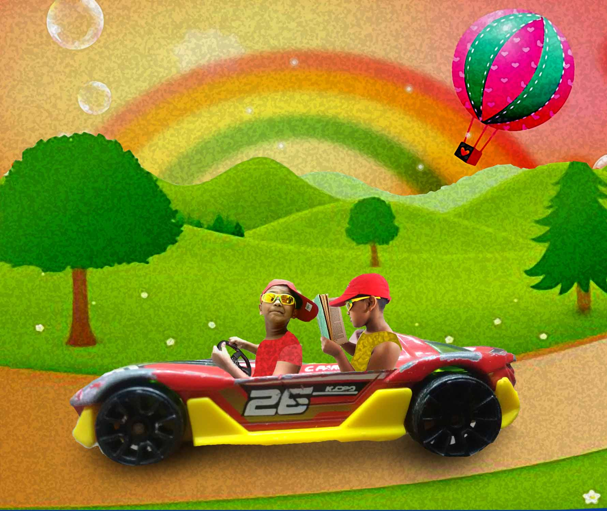
Photoshop is a professional image edting tool and GIMP is a very good free alternative. Choosing between GIMP and Photoshop gets a lot easier; if one a professional or someone who is going to use all the extra tools then Photoshop is the obvious tool. And if one have a Linux machine, are on a budget, or only need to use the app occasionally then GIMP is the app to go with. A very interesting comparison of these tools is discussed here
I explored Gimp and photoshop. Gimp was entirely new to me and I found it very user friendly, I tried removing the background etc. The image editing assignment was made a fun family weekend activity. With my son Ethan as the model with his toy car and my wife’s creative contributions. And we made the edited image in photo shop as above. The detailed steps of creation are shown in the GIF animation created using powerpoint and the online tool GIFcreator.
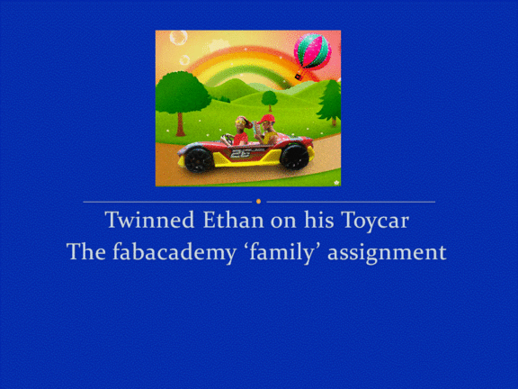
I found that the 'My Paint' is very advanced than the default windows 'Paint' application. Mypaint is very easy to use, I have also used a tablet and drawn my favourite childhood painting of a landscape. I really liked using Mypaint with the tablet.
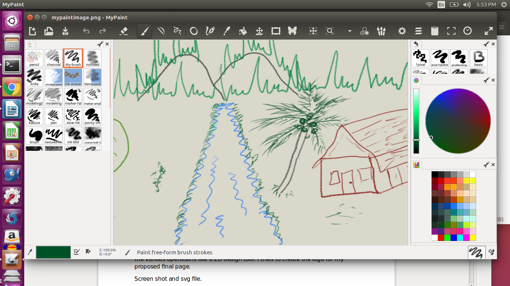
I have used 'Microsoft Ofice picture Manager' on Windows, for basic image editing tasks. I have used this tool, for resizing and compressing the images for the webpage. I also frequently use the auto adjust feature which enhances the photographs.
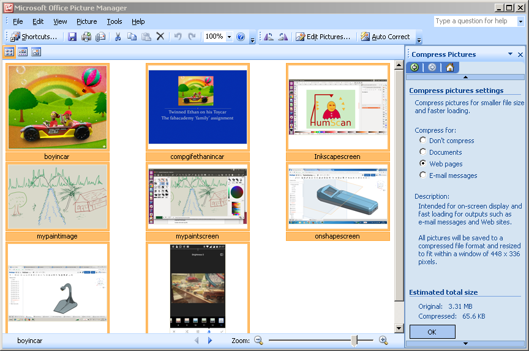
Snapseed is a mobile application and I tried this on my Phone. This is very easy to use with a intuitive user interface. All the basic image editing options are available in this tool, and also some good filters.
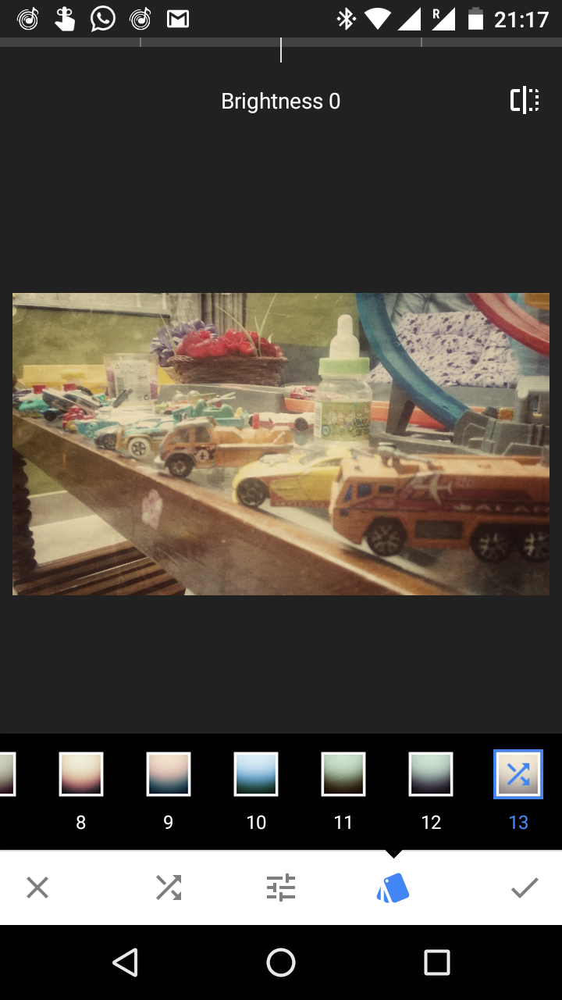
I tried using inkscape and I really like this vector based 2D tool. Its interesting to do the various operations like a 2D design tool. I tried to create the logo for my proposed final page. The Logo file I created using Inkscape available here
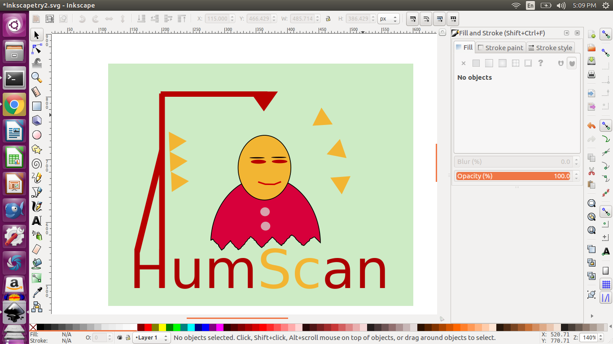
In 3D computer graphics, 3D modeling is the process of developing a mathematical representation of any Three dimensional surface of an object via specialized 3D software.
I have explored some of the CAD packages like the 'coding' based Openscad,'cloud' based Onshape, 'opensource' Freecad', Simple Maker style tools like 123DDesign and Tinker CAD, and 'commerecial' cad tools like Solidworks & NX
.I have tried using openscad and this application uses coding to create and edit models. say like cube(1,2,3) etc. i have found a cheatsheet of the commands here. Personally I found it is very difficulty to use. But for a novice, this could be good learning tool understand the basics and underlying priciples of CAD. Also this technique of creation of models could be used for background generation of CAD data based on datasheets etc as in knowledge based engineering.The scad file I created is available here.
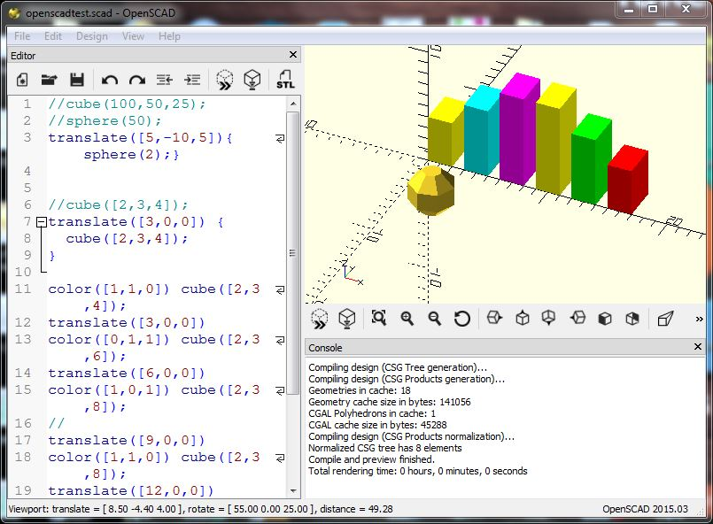
123D Design is useful for trying out simple model. Since the parametric relations are not very rigid, it was easy to do free form editing by dragging surfaces etc. Anyway there are sketches and boolean operations also, so we cannot say its fully unparametric. One of the main advantage of this is the easiness to use and the very low system requirements. Upon familiarazation, definitely this could become my go to tool for illustrating ideas quickly in 3D and for 3D printing. I also liked the rendering and the materials in the Library. I modelled a simple enclosure for the electronics for my project in 123D, and the file is available here.
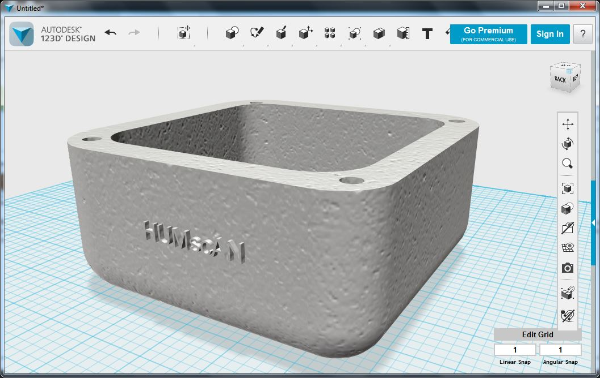
Solidworks is a commercial grade 3D CAD software on windows systems. Solidworks has a sketch based workflow, on which almost all the features we create is started or referenced back to a sketch. There are various addons available for Solidworks which helps us to do photorealistic rendering, animations, FEA study etc. I have modelled a simple mechanism with two links (one short and another long), and a pin. I then created the assembly and then did the motion study to create an animation and then did a Simulation study on the short link by giving the boundary conditions. The files are available here Small Link, Long Link and Pin, and Screenshots are placed below. I also took a session on Solidworks at Trivandrum Fablab for the benifit of fabacademy-2017 students.
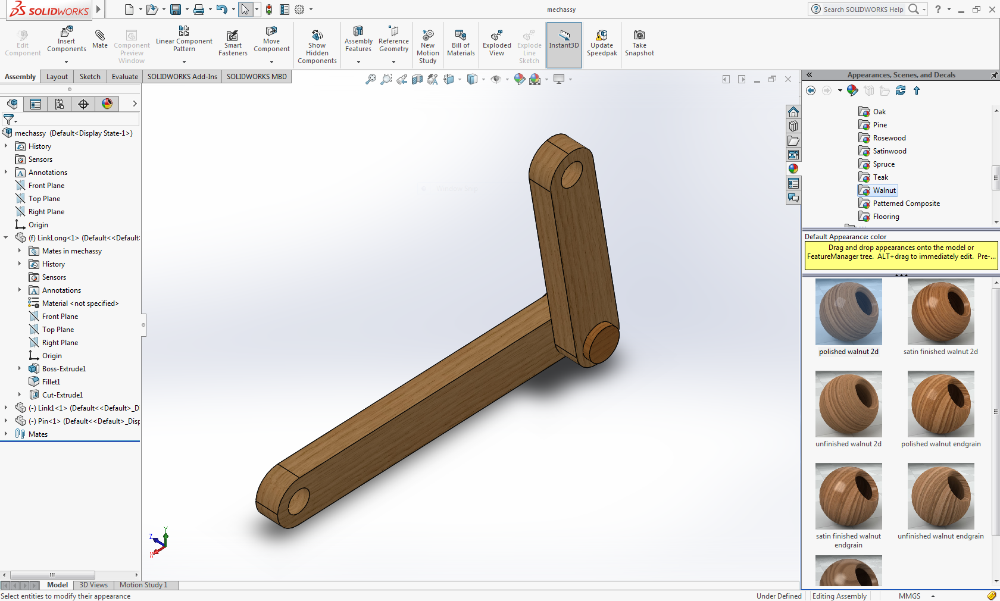
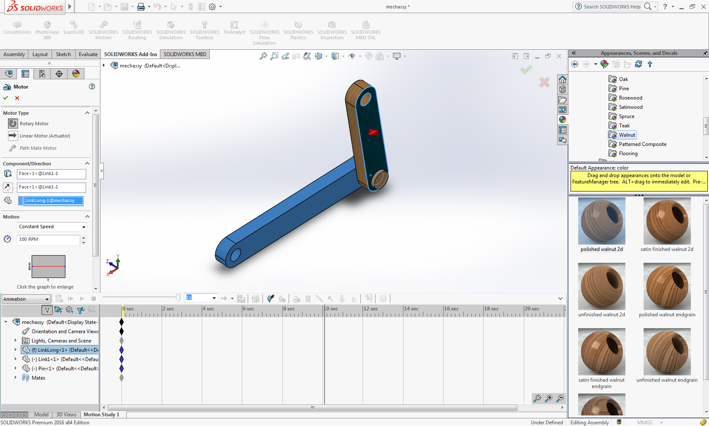
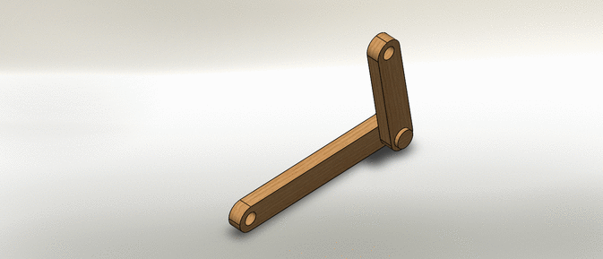
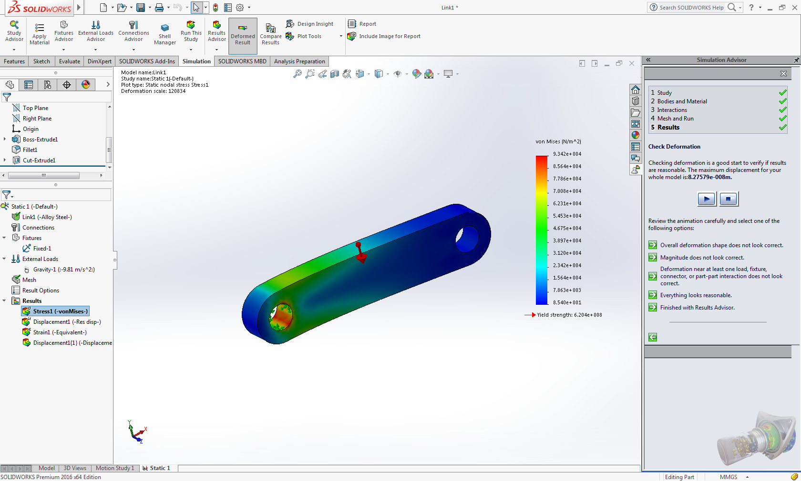
Onshape is a cloud based CAD tool, and I felt that Onshape is sharing many of the logics with Solidworks. This is one of the first cloud based CAD tool I have used, and we could get fast understanding the concepts with some prior knowledge in traditional CAD packages. Onshape has a very active online community, which is a plus when you start learning a new tool. The free version offers unlimited Public documents which is very much okay for the kind of work at Fabacademy. I have created few models and also tried assembly and the usage of few plugins via the appstore. The online version management is an added plus for managing the various versions of the design documents. I also upgradedmy free account to education as per the email from fabacademy centre co-ordination. The cad files I created for a tachometer housing using Onshape are available here.
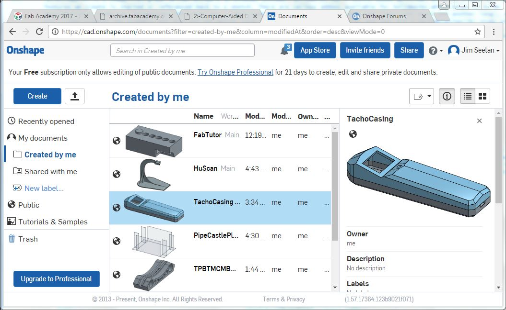
I created the CAD model fo the boom fixture for my proposed final project. I plan to cut this on shop bot, so I made this using multiple profile sheets. I then exported it out as a parasolid and took it to parasolid. My intention was to use few of the standard partts available in the addons on Onshape. I tried putting a bearing from the 3DX Certified model Library. My model is still work in progress and I plan to complete it in the coming weeks as I gather more info on various concepts.
The PRT file and the parasolid files are available on PRT and STP.
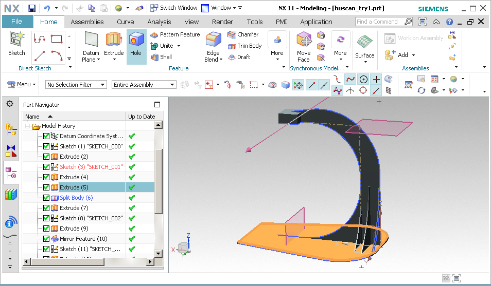
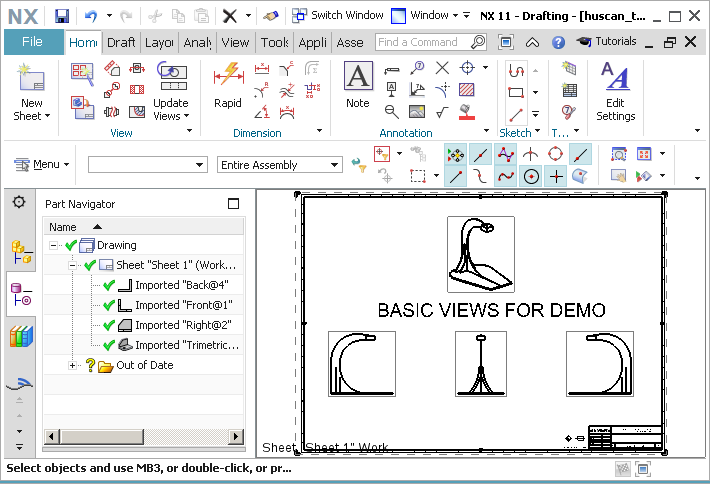
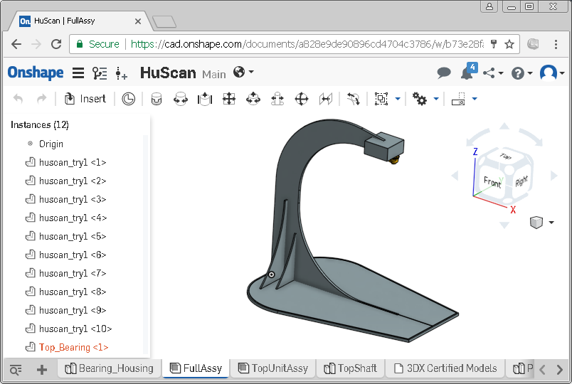
This week's learning was effective, by brushing up the various concepts of 2D and 3D CAD and the various tools. Once I receive the software, I also plan to try out various Autodesk Tools, Blender and Rhino too. My Preference for tools are as follows
2D Tools
3D Tools
{kind=link}